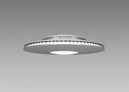
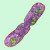

FEATURED PROJECTS
Title description, April 7, 2014
Mauris neque quam, fermentum ut nisl vitae, convallis maximus nisl. Sed mattis nunc id lorem euismod placerat. Vivamus porttitor magna enim, ac accumsan tortor cursus at. Phasellus sed ultricies mi non congue ullam corper. Praesent tincidunt sed tellus ut rutrum. Sed vitae justo condimentum, porta lectus vitae, ultricies congue gravida diam non fringilla.

RESUME
Title description, April 2, 2014
Mauris neque quam, fermentum ut nisl vitae, convallis maximus nisl. Sed mattis nunc id lorem euismod placerat. Vivamus porttitor magna enim, ac accumsan tortor cursus at. Phasellus sed ultricies mi non congue ullam corper. Praesent tincidunt sed tellus ut rutrum. Sed vitae justo condimentum, porta lectus vitae, ultricies congue gravida diam non fringilla.
Hi my name is Vasil
I am an aspiring Data Analyst with a focus on Database Mangement, Business Intelligence and Strategy.
I started becoming more involved with Data Science after starting my own business in Denver, Colorado. I love taking deep dives into data and figuring out how and why things work, finding hidden links and associations between different sets of data and ultimately creating solutions to complex problems.
In my spare time you might find me under the hood of a car, picking up heavy things and putting them down repeatedly or on StackOverflow.
Featured Challenges
-

UFO Visitor Dashboard
Create a dynamic table based upon UFO sighting dataset that will enable users to search and filter the table data for specific values.
-

Belly Button Biodiversity Interactive Dashboard
Building interactive dashboard to explore Belly Button Biodiversity, which catalogs the microbes that colonize the human navel. A dynamic dashboard that updates all charts and graphs when a new sample is selected. Gif Version
-
 Dorum
Dorum
Ultricies congue
Featured Technologies (Dont forget to link each one)
Python New York London IKEA NORWAY DIY Ideas Baby Family News Clothing Shopping Sports Games